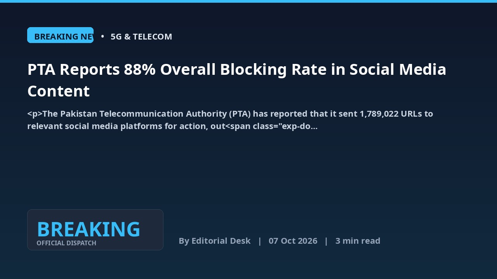
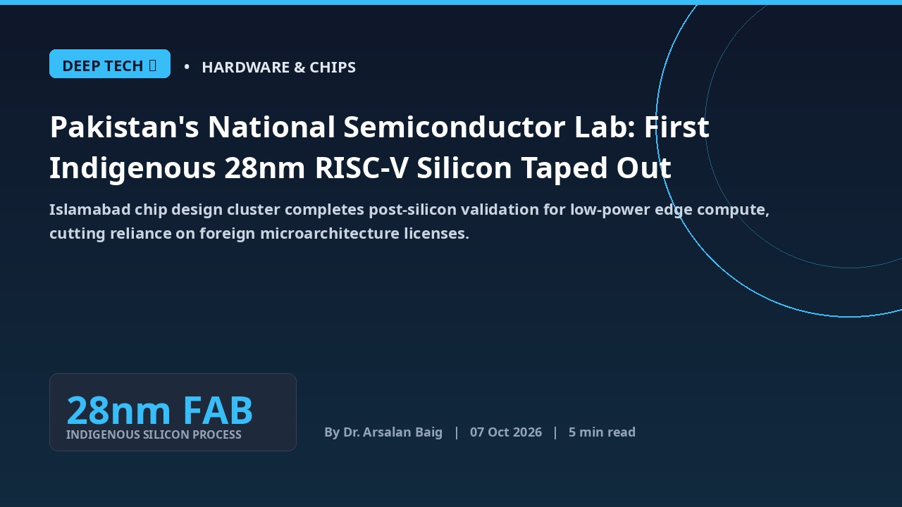
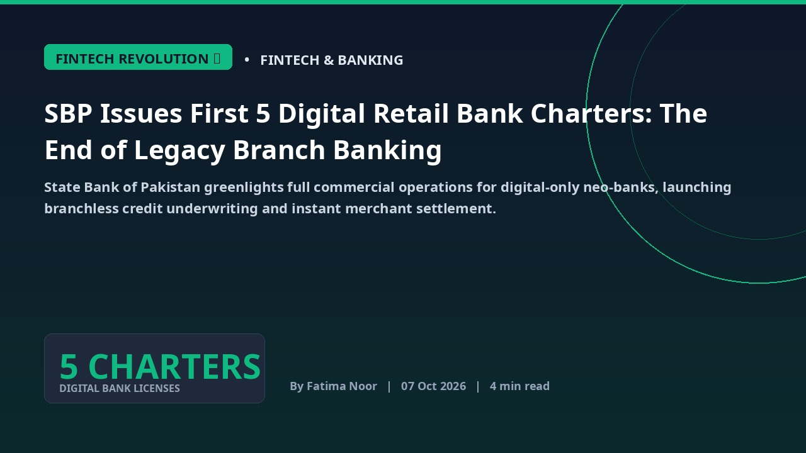
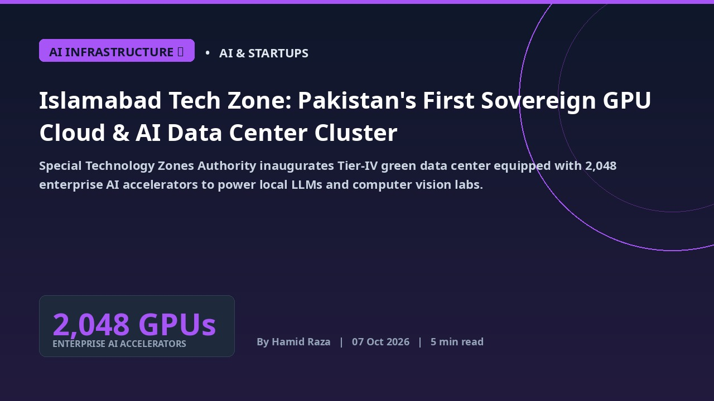
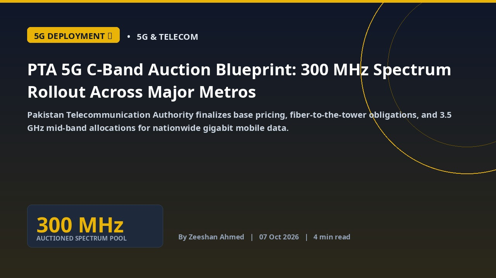

Latest


FBR Mandates Real-Time Digital Invoicing for Tier-1 Retailers and E-Commerce Marketplaces
Federal Board of Revenue expands automated POS and electronic billing synchronization, tracking sales tax transactions instantly through cryptographically signed QR codes.

Ministry of IT Establishes Pakistan Sovereign AI Compute Cluster with 1,000 High-Density GPU Nodes
National artificial intelligence compute facility in Islamabad offers domestic startups, universities, and enterprise research labs subsidized access to sovereign inference and training hardware.

PTA Finalizes 5G Spectrum Auction Framework: 300 MHz in 3.5 GHz Mid-Band Earmarked for Commercial Launch
Pakistan Telecommunication Authority prepares nationwide spectrum auction, providing cellular mobile operators with flexible installment payments and ten-year tax incentives.
State Bank of Pakistan Integrates Raast with Arab Monetary Fund Buna Platform for Zero-Fee Remittances
Central bank completes phase two of digital payment corridor linking Pakistani commercial banks with GCC clearinghouses, enabling instant settlements for overseas workers.
 BREAKING WIRE ⚡
BREAKING WIRE ⚡
India's Iron Curtain: Starlink Begs Ambani Amidst Regulatory Paralysis Echoing Pakistan's Hurdles
Elon Musk's direct plea to Indian billionaire Mukesh Ambani for Starlink's market entry exposes a formidable regulatory maze and a protectionist environment, drawing stark comparisons to market access challenges often faced by foreign tech firms in developing nations, including Pakistan.
 BREAKING WIRE ⚡
BREAKING WIRE ⚡
Petrol Price Plunge: A Fleeting Respite Amidst Economic Headwinds
The federal government has announced a temporary reduction in motor spirit (MS) petrol prices for the next three days, marking the first such decrease since September. This move, while short-lived, offers a moment of relief to consumers and a subtle, though significant, signal for the operational dynamics across Pakistan's diverse sectors, including the burgeoning digital economy.
 SPECIAL REPORT 🛡️
SPECIAL REPORT 🛡️
Browser Session Hijacking: How Stolen Cookies Are Breaching Corporate Cloud Defenses
As infostealer malware and malicious extensions surge during Cybersecurity Awareness Month, a single compromised browser token can grant adversaries unfettered access to internal enterprise systems, customer databases, and corporate infrastructure.
 BREAKING WIRE ⚡
BREAKING WIRE ⚡
Rs. 300 Million for PM Office: A Critical Lens on Pakistan's Spending Priorities
The Economic Coordination Committee (ECC) has approved a Rs. 300 million Technical Supplementary Grant for the CDA to improve the Prime Minister's Office and staff colony, sparking debate over national resource allocation.
ECC Clears Initial Election Funds: A Digital Infrastructure Impetus?
The Economic Coordination Committee has approved an immediate Rs. 2 billion, 11% of the total Rs. 18 billion, for non-sensitive election procurements. This initial release signals electoral readiness and potential for leveraging digital infrastructure.
 BREAKING WIRE ⚡
BREAKING WIRE ⚡
Fueling Inflation: Petrol Price Soars Sixth Consecutive Day, Telecom Sector Braces for Impact
The federal government has hiked motor spirit (MS) petrol prices for the sixth consecutive day, intensifying inflationary pressures across the economy and posing significant operational challenges for Pakistan's telecom and digital infrastructure.
 BREAKING WIRE ⚡
BREAKING WIRE ⚡
PTA's Content Control Powers: A Defining Moment for Pakistan's Digital Landscape
The Pakistan Telecommunication Authority (PTA) has reasserted its comprehensive authority to block or remove unlawful online content, marking a significant regulatory shift with profound implications for social media usage and digital rights in Pakistan.
PTA Mandate: Millions of SIMs at Risk Amidst ID Verification Crackdown
The Pakistan Telecommunication Authority (PTA) has announced a critical directive to suspend mobile services for SIM users whose identification documents are not updated or properly verified, signaling a stringent push for enhanced security and regulatory compliance across the telecom sector.
Mandatory Consent: A New Paradigm for Telecom Infrastructure Deployment in Pakistan
Pakistan's government has mandated owner's consent for telecom infrastructure on private property, a move set to reshape network deployment strategies and prioritize property rights across the nation.
CM Maryam Nawaz Boosts Female Mobility: Pink Buses Launched at Kohsar University Murree
Punjab Chief Minister Maryam Nawaz Sharif has initiated a significant step towards empowering female students by providing two dedicated Pink Buses to Kohsar University Murree, addressing critical transportation challenges.
Punjab Special Economic Zones Attract Rs. 76 Billion in High-Tech Industrial Investments
Allama Iqbal Industrial City and Quaid-e-Azam Business Park secure major domestic and foreign manufacturing commitments across electronics and clean energy.
 STREAMING PULSE 🎧
STREAMING PULSE 🎧
Spotify Expands Audiobooks Streaming Catalog into Pakistan: The Creator Monetization Frontier
Audio streaming giant prepares localized audiobook tiers in Pakistan, opening direct royalty channels for Urdu authors, narrators, and audio drama producers.
Pakistan's Unikrew Solutions Clinches ASOCIO 2026 Tech Award for AI in Financial Services
Karachi-based fintech software lab recognized across 24 Asia-Pacific economies for pioneering biometric authentication and alternative credit scoring engines.
 GLOBAL TECH 🤖
GLOBAL TECH 🤖
Pakistan Tech Delegation Showcases Frontier AI Enterprise Solutions at Dubai Global Summit
Pakistani software exporters and machine learning labs unveil proprietary Arabic and Urdu natural language models, signing regional enterprise contracts.
NCERT and NTC Issue Critical Advisory on Weak Password Practices and Credential Stuffing
National Computer Emergency Response Team warns government agencies and digital consumers of coordinated brute-force intrusions targeting un-patched portals.
 BREAKING WIRE ⚡
BREAKING WIRE ⚡
Google Playground Unlocks AI-Driven Game Development for All
Google's new browser-based Playground platform leverages artificial intelligence to empower anyone to create custom games using simple prompts, eliminating the need for complex coding skills. This innovation marks a significant leap in democratizing game development.
 BREAKING WIRE ⚡
BREAKING WIRE ⚡
Pakistan's Forex Reserves Edge Up by $15M: A Glimmer of Stability?
Pakistan's foreign exchange reserves recorded a modest increase of $15 million in the week ending October 2, 2026, marking a slight upward movement in the nation's critical financial indicators. This minor accretion offers a cautious signal amidst ongoing efforts to stabilize the economy.
Jazz Launches 5G Campaign Focused On Customer Choice - Digital Pakistan
Jazz Launches 5G Campaign Focused On Customer Choice Digital Pakistan

BREAKING NEWS ⚡PTA Reports 88% Overall Blocking Rate in Social Media Content
Pakistan Telecommunication Authority reports an 88% compliance rate across social media platforms, processing over 1.78 million URLs for regulatory action.

DEEP TECH 🔬Pakistan's National Semiconductor Lab: First Indigenous 28nm RISC-V Silicon Taped Out
Islamabad chip design cluster completes post-silicon validation for low-power edge compute, cutting reliance on foreign microarchitecture licenses.

FINTECH REVOLUTION 💳SBP Issues First 5 Digital Retail Bank Charters: The End of Legacy Branch Banking
State Bank of Pakistan greenlights full commercial operations for digital-only neo-banks, launching branchless credit underwriting and instant merchant settlement.

AI INFRASTRUCTURE ⚡Islamabad Tech Zone: Pakistan's First Sovereign GPU Cloud & AI Data Center Cluster
Special Technology Zones Authority inaugurates Tier-IV green data center equipped with 2,048 enterprise AI accelerators to power local LLMs and computer vision labs.

5G DEPLOYMENT 📶PTA 5G C-Band Auction Blueprint: 300 MHz Spectrum Rollout Across Major Metros
Pakistan Telecommunication Authority finalizes base pricing, fiber-to-the-tower obligations, and 3.5 GHz mid-band allocations for nationwide gigabit mobile data.
Solar Net-Metering Overhaul: SBP Gross-Metering Framework & Battery Storage Incentives
Ministry of Energy details updated export buyback tariffs alongside 0% customs duty on commercial lithium energy storage systems to stabilize the national grid.
Pakistan's Youth Digital Leap: How to Secure Laptops & Skill Stipends
The government unveils crucial programs designed to equip young Pakistanis with free laptops and financial aid for essential digital skills, fostering national economic growth.
 GOVT GUIDE 📑
GOVT GUIDE 📑
Get Raast P2P & Asaan Digital Accounts: Your 48-Hour Agent-Free Guide
Unlock instant payments and easy banking in Pakistan. Learn how to set up your digital accounts quickly and securely without hidden fees.
Don't Lose Lakhs: Your Ultimate Used Car Inspection & Resale Guide
Navigating Pakistan's used car market requires vigilance. Learn critical inspection steps and identify champions for maximum resale value to protect your investment.
PTA Tax Relief? New Import Rules!
Government reportedly considering major changes to PTA mobile tax structure for imported devices.
Starlink Coming? PTA Registers SpaceX!
Pakistan Telecommunication Authority registers SpaceX subsidiary, fueling Starlink launch speculation.
Solar Panel Prices Hit Record Low
Massive supply surplus drives costs down to unprecedented levels across major Pakistani cities.
Pakistan's EV Dream Just Got Cheaper!
New policy aims to slash electric vehicle prices, making them accessible to more Pakistanis.
Mobile Tax Hikes!
New PTA duties make imported phones significantly more expensive for Pakistanis.
Pakistan’s 5G Spectrum Auction: PTA Finalizes 3.5 GHz Bands for Commercial Rollout
With an estimated $600M spectrum valuation and fiber-to-the-tower mandates, Pakistan prepares for ultra-low latency gigabit mobile infrastructure.
Pakistan IT Exports Surge Past $3.8 Billion: Software Parks & Global Enterprise Contracts
A depreciated rupee, booming freelance developer base, and enterprise AI outsourcing propel Pakistan into South Asia’s fastest-growing tech exporter.
The Rise of Pakistani AI Labs: Deep-Tech Startups Secure Institutional Seed Capital
From Urdu large language models to automated legal tech and medical diagnostics, domestic founders attract cross-border venture backing.
Raast P2M Revolution: How Micro-Merchant QR Codes Are Demonetizing Cash in Pakistan
With over 40 million registered IDs and zero interchange fees, the State Bank’s instant payment rail is digitizing mom-and-pop retail nationwide.
RISC-V Architecture: Pakistan’s Push to Become an Open-Source Chip Design Powerhouse
University research labs in Islamabad tape out sub-28nm automotive and IoT silicon, bypassing costly proprietary intellectual property licenses.
Electric Two-Wheelers Take Flight: Local Battery Assembly Cuts Fuel Import Bill
With lithium iron phosphate (LFP) pack assembly lines launching in Karachi and Lahore, electric bikes reach total cost of ownership parity with petrol.
PHONE PRICES SOAR: BUDGET SHOCKWAVE HITS!
New government budget proposals signal imminent surge in mobile phone costs across Pakistan.